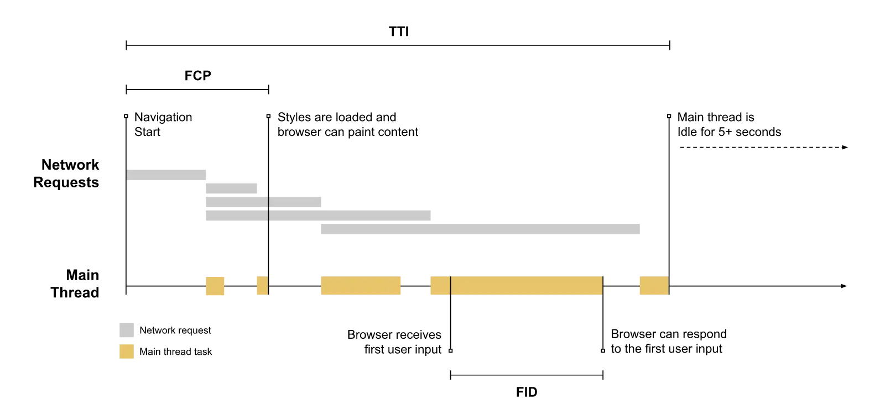

Short answer
First Input Delay is the older responsiveness mark that watched only the first input.
Interaction to Next Paint replaced it in the Core Web Vitals set because later inputs can be the slow ones on a catalog. A trace that marks first input delay next to first paint and time to interactive is a historical diagram. It explains the old mark. It is not a license to keep reporting the old mark as if it were current, and it is not a measurement of any site.
Definition
The first input on a B2B page is often a useless one: a click on the logo area while the page is still busy, or no input at all during the trace. The filter click a minute later was invisible to First Input Delay. That is why a health pass that still speaks only about the first input is describing an outdated definition. SEO Health should name the definition it is using.
How the definition is used in a health pass
If a report still says First Input Delay, label it as the old definition and look at later interactions separately.
The trace on this page is useful because it shows several marks on one load. Those marks are not interchangeable. Time to interactive is not the same as input delay, and first paint is not either of them. Mixing the labels produces a note nobody can repair. The article does not read a number off the diagram and assign it to a company.

What to check
- Whether current notes still treat First Input Delay as the live definition
- Later interactions that the old mark could not see
- That first paint, time to interactive, and input delay stay labeled apart
- A sample URL for the interaction that matters now
- No number copied from a historical diagram
A practical example
An old dashboard export still lists First Input Delay for the home page, where the first input is rare, and says nothing about the facet click on the category template. The health update is to stop treating that export line as the current responsiveness check and to sample the facet interaction instead.
What this does not claim
Retiring the old mark does not guarantee rankings or citations.
Where Mika Visibility files this
Mika Visibility files this under SEO Health, the track that asks whether the live site is technically ready to be found and understood. SEO Growth remains a separate question about coverage and intent. GEO Health and GEO Growth stay on their own scales. A calm loading or responsiveness note never becomes an automatic growth score, and there is no blended overall score.
The trace distinguishes old and neighboring marks so the page can explain the replacement without inventing a delay.
FAQ
What did First Input Delay watch?
First Input Delay is the older responsiveness mark that watched only the first input.
How should an old report be labeled?
If a report still says First Input Delay, label it as the old definition and look at later interactions separately.
Does retiring the old mark guarantee rankings?
Retiring the old mark does not guarantee rankings or citations.
Next step
Run a structured SEO + GEO audit to see health findings, growth gaps, and a blueprint you can act on.
Clearer entities, answers, evidence, and context make pages easier to understand and reference. Results in any answer product are not guaranteed.